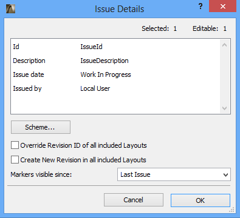

API_RVMIssue
Represents an Issue.
typedef struct {
API_Guid guid;
GS::UniString id;
GS::UniString description;
GSTime issueTime;
GS::UniString issuedByUser;
short userId;
bool isOverrideRevisionId;
bool isCreateNewRevision;
short visibleMarkersInIssues;
bool issued;
bool filler[5];
GS::HashTable<API_Guid, GS::UniString> customData;
} API_RVMIssue;
Members
- guid
- GUID of the Issue.
- id
- ID of the Issue.
- description
- Short description of the Issue.
- issueTime
- Issued time of the Issue.
- issuedByUser
- TW user identifier (full name) who issued the Issue.
- userId
- The member ID of the owner in TeamWork mode.
- isOverrideRevisionId
- Corresponds to the Override Revision ID of all included Layouts checkbox on the Issue Details dialog (see picture below).
- isCreateNewRevision
- Corresponds to the Create New Revision in all included Layouts checkbox on the Issue Details dialog (see picture below).
- visibleMarkersInIssues
- Corresponds to the Markers visible since dropdown list on the Issue Details dialog (see picture below).
- issued
- Status of the issue (issued or opened).
- customData
- Contains the custom data fields. The custom scheme GUID-value pairs are stored in a GS::HashTable.
Remarks
You are able to get all issues via APIDb_GetRVMIssuesID function, and get the custom scheme of issues via APIDb_GetRVMIssueCustomSchemeID function.

Issue Details dialog
Requirements
- Version: API 18 or later
- Header: APIdefs_Database.h
See Also
APIDb_GetRVMIssuesID, APIDb_GetRVMIssueCustomSchemeID, API Types